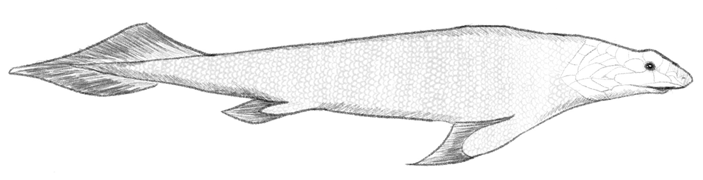
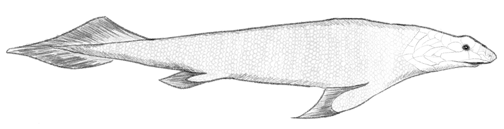

Pandericthys is a key fish of the Devonian in terms of evolutionary theory, as it’s fins help to understand the transition from fin to “hand” when contextualized with other fish and amphibians of the Devonian era. Additionally, its pelvis seemed to be the main source of movement, much like land animals. Whether pandericthys was in fact part of the movement from water to land is still debatable despite its contributions to the understanding of this matter. Pandericthys likely lived in shallow waters, using its strong and short fins to move when water levels were low. Its body likely would have permitted for locomotion on land, and it is theorized that it may have used this specialized skill to access new bodies of water by moving through swamps. Its fossils have been located in Russia and Latvia.